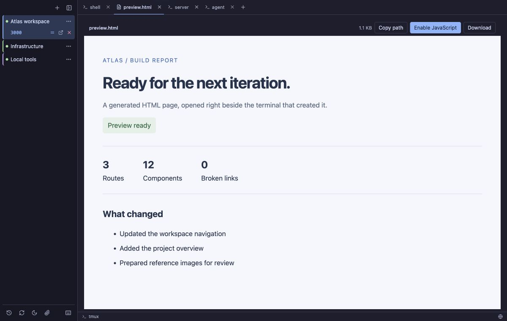
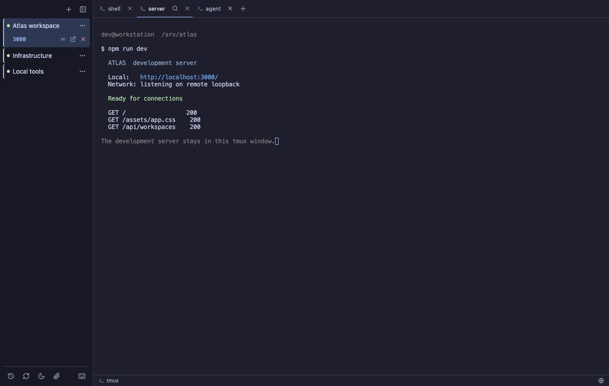
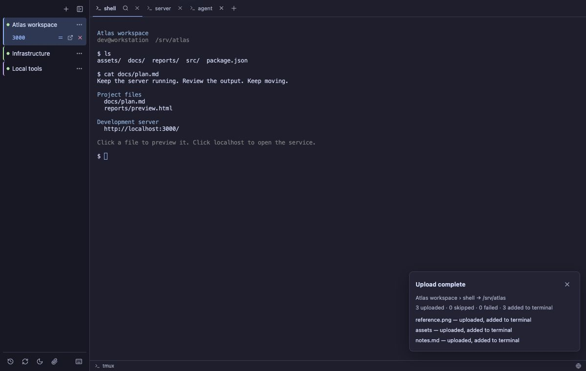

Stay connected
Return to the same tmux session after network changes, sleep, or an app restart.
A DESKTOP CLIENT FOR TMUX
A reliable home for your tmux sessions, with file previews, localhost links, SSH tunnels, and drag-and-drop uploads built into your workflow.
macOS · Windows · Linux Free & open source

BUILT AROUND YOUR WORK
Return to the same tmux session after network changes, sleep, or an app restart.
Open files and self-contained HTML pages in a tab next to your terminal.
Local service addresses in terminal output become clickable links automatically.
Click a remote localhost link. Buoy establishes an SSH tunnel and opens your browser.
Drag files or folders into a terminal to upload them to its current directory.
Native tmux tabs / Existing-session import / Terminal search / Dark & light themes / Agent notifications
02 / PREVIEW IN PLACE
Click a path in terminal output to preview text, Markdown, images, or a self-contained HTML page. Its preview opens next to the terminal that produced it.
Copy the path or download the original with the visible preview controls. HTML opens with JavaScript off; enable it explicitly for a file when needed.
See a Markdown preview
03 + 04 / LOCALHOST & TUNNELS
Buoy recognizes addresses such as localhost:3000 and
127.0.0.1:8080 in terminal output. Click one from a
remote workspace to open the service through an SSH tunnel.
The forward stays under its workspace in the sidebar. Buoy remembers the local port and restores the tunnel after reconnecting, so the browser URL stays useful.
Detect the address → establish the tunnel → open the browser.

05 / DRAG & DROP UPLOADS
Drop files or folders onto a connected terminal. Buoy uploads them over SSH/SCP, preserves folder structure, and shows progress and per-item results.
Choose Upload & attach to add paths to the original terminal input without pressing Enter, or Upload only to leave the input alone. Existing names are skipped.
See the drop target
Screenshots show the Buoy 0.1.4 interface with demonstration workspaces.
PICK UP WHERE YOU LEFT OFF
Choose your package from the latest GitHub release.
Download Buoy
Universal DMG · Apple Silicon & Intel
Developer ID
signed and notarized
x64 · MSI or setup executable
Currently unsigned
x86_64 · AppImage, .deb, or .rpm
BEFORE YOU CONNECT
For remote sessions, you need SSH access and tmux installed on the remote host. For durable local sessions, install tmux locally. Native tabs require tmux 3.2 or newer; older versions use a regular terminal view. Read the requirements.
Quitting Buoy or detaching leaves tmux running. Deliberately closing a session ends it and saves a recovery snapshot. Resume rebuilds shells in their last working directories; it does not restore running processes or unsaved application state. A plain local shell without tmux cannot survive quitting Buoy.
Yes. Buoy is available under the MIT license. The source, installation instructions, release notes, and issue tracker live in the buoy-tmux repository on GitHub.
{kind=link}
{kind=link}